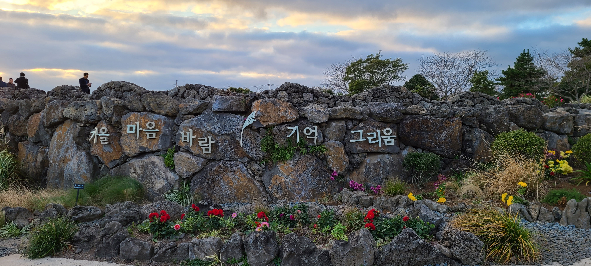
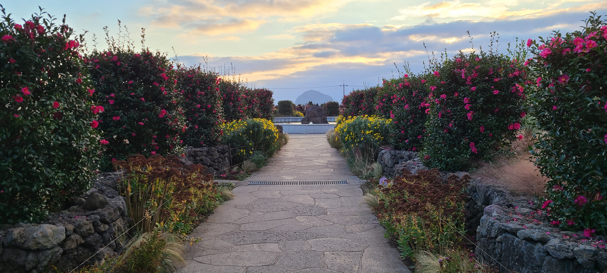

Gallery
3박 4일 일정으로 한라산 백록담 등산등 빡빡한 일정이었다. 한국의 최남단 섬 마라도도 방문하였다
First Day
송악산 입구
마라도 가기전이나 다녀온후 송악산 둘레길(30분 정도 소요)을 볼수 있다
송악산 일제 동굴진지
제주 곳곳에서 이런 흔적을 볼수 있다
송악산 둘레길에서 본 전경
왼쪽에 산방산과 용머리해안이 오른쪽에 형제섬이 보인다
송악산 둘레길에서 본 전경
왼쪽에 가파도가 보인다
송악산 둘레길에서 본 전경
해안가 주상절리가 절경이다
마라도 도착
안내지도가 섬전체에 대해 안내하고 있다"짜장면 시키신분"
짜장면집등 음식점이 보인다(시간이 충분하니 짜장면 한그릇 드시고... )마라도 해안길
조그마한 섬의 해안길이 멋지다마라도 해안길
해안길을 걸어가고 있다
마라도 해안길
대한민국 최남단 마라도 지도조형물
카멜리아 힐에서
동백꽃이 아름답다(다양한 동백꽃이 있다)연못옆에서
동백과 어울려 아름답다
동박새
사랑을 이어주는 동박새

카멜리아 힐 가을테마
... 그리움
